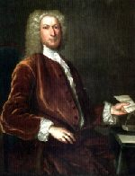

Philip Livingston
Future Albany leader Philip Livingston was christened at the Albany Dutch church in July 1686. He was the fourth child and second son born to the marriage of Robert and Alida Schuyler Van Rensselaer Livingston. He grew up learning the intricacies of business, trade, and the marriage of opportunity and public service from the most successful entrepreneur in the Hudson Valley.  From an early age, Philip Livingston acted as his father's assistant, deputy, and then surrogate. By the time he reached adulthood, the pupil was well on his way to becoming a master himself.
In 1708, he married Catharina Van Brugh - the nineteen-year-old daughter and only heir of a former mayor of Albany. The new couple set up housekeeping in Albany at the Elm Tree Corner. Like their father, the twelve Livingston children were born in that landmark home. From there, they would go forth to further elevate the family name and enhance its status throughout the province and beyond.
After Robert and Alida Livingston relocated to Livingston Manor, Philip took over his father's Albany enterprises. He also succeeded to the key positions of city and county clerk and Secretary to the Commissioners of Indian Affairs. As a young man, Philip Livingston surveyed land titles. Although appearing in court for many years previous, in 1719 he was licensed to practice law. But it was his long-time hold on the Albany clerk's office that connected him to potentially profitable public activities at several levels and placed him first in line to take advantage of business, real estate, and other opportunities. Clerk in practice under his father for many years, Philip Livingston was officially appointed in 1721 and held that position until his death.
At the same time, Lvingston expanded his Albany holdings, owned a house in Schenectady, held property at Schaghticoke, was a partner in other countryside patents, and concealed still other properties with deeds in the names of his children. He also ventured into real estate in Massachusetts under the patronage of childhood cohort Jacob Wendell - one of the wealthiest men in New England.
In 1725, he was appointed to the provincial Council. He served on this influential board until his death. As his older brother had died in 1720, Philip became lord of Livingston Manor on the passing of his father in 1728. However, he was entrenched in business and public positions in Albany - preferring to live at the yellow brick house on the Elm Tree Corner while often traveling to New York. Still, he found time to further develop the Livingston estate adding new tenants and establishing the colony's first iron works at Ancrum by the 1740s.
Over a long career, Philip Livingston cemented and even added to the extensive holdings first garnered by his more famous father. Well-schooled in the politics of opportunism, he was able to take advantage of several key positions during a long period of peace to develop the manor and increase the family's real estate holdings. He laid the groundwork for the success of the next generation by sending the sons away for training and his daughters to be married into the most advantaged families in the region.
Philip Livingston filed a will in July 1748. At that time, he was in "perfect health" and living in New York. After his wife's passing, his substantial estate was to be parceled out to his nine living children. He died on February 11, 1749. His body was transported upriver for burial on Livingston Manor.
Portrait attributed to John Smibert about 1737. Private collection. Copied from Ruth Piwonka, A Portrait of Livingston Manor, 1686-1850, p. 32.
Philip's parents had moved to Livingston Manor sometime before his marriage in 1708. The Albany house was very familiar to the new couple. It remained Philip Livingston's Albany headquarters throughout his life.